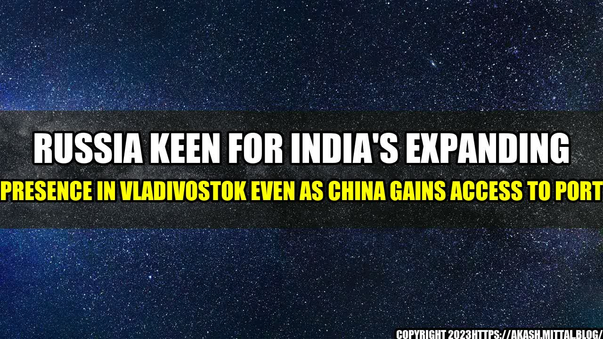

Russia Keen for India's Expanding Presence in Vladivostok Even as China Gains Access to Port
In a surprising turn of events, Russia has welcomed India's expanding presence in the far eastern city of Vladivostok. This development comes even as China gains access to the port and seeks to increase its economic and strategic influence in the region. India's presence in the region is seen as a counterbalance to China's growing dominance in the area.
The story of Vladivostok dates back to the mid-19th century when Russia established a naval station on the Pacific coast of Siberia. It later became an important trade hub and played a significant role in Russia's relations with the Far East and Asia. However, the city's economic and strategic importance declined after the fall of the Soviet Union in 1991.
In recent years, however, Russia has been making efforts to revitalize Vladivostok and transform it into a major economic and strategic center. One of the key pillars of this strategy is the development of the city's international transport corridor, which aims to connect Russia with other countries in the region and beyond.
India stands to gain a lot from its expanding presence in Vladivostok. The city is strategically located at the crossroads of the Asia-Pacific region and serves as a gateway to Russia's Far East. It also has a well-developed infrastructure and is home to several major industries.
One of the quantifiable examples of India's expanding presence in Vladivostok is the recent agreement between the two nations to build a new shipping route that will connect Vladivostok with Chennai, India's key port city on the southeastern coast. The route will reduce the transit time between India and Russia by around 20 days and boost bilateral trade and investment.
Why India's Presence in Vladivostok is Significant
- Strategic Location: Vladivostok is strategically located at the crossroads of the Asia-Pacific region and serves as a gateway to Russia's Far East. India's expanding presence in the city will enable it to gain a foothold in the region and counterbalance China's growing influence.
- Economic Opportunities: Vladivostok has a well-developed infrastructure and is home to several major industries. India can tap into these industries and explore new trade and investment opportunities in the region.
- New Shipping Route: The new shipping route between Vladivostok and Chennai will reduce the transit time between India and Russia by around 20 days and boost bilateral trade and investment. It will also provide a faster and more efficient way for Indian companies to transport goods to Russia and beyond.
and Case Studies
Deepak, a businessman from Delhi who deals in import-export, shared his experience of doing business with Russia. "Russia has enormous potential for trade and investment, but there are many challenges as well. One of the biggest challenges is the lack of a reliable transportation system, especially in the far eastern region. The new shipping route between Vladivostok and Chennai is a game-changer and will make it much easier and faster for us to transport goods to Russia."
Another case study is that of Ashish, a student from Mumbai who is studying in Russia. "As an Indian student in Russia, I am excited about the new opportunities that India's expanding presence in Vladivostok will bring. It will enable Indian students like me to explore new academic and career options in the region and gain a better understanding of Russia's culture and people."
Conclusion
In conclusion, Russia's welcome of India's expanding presence in Vladivostok is a significant development that has the potential to transform the economic and strategic landscape of the Far East and Asia. India's presence in the city will enable it to gain a foothold in the region and establish a counterbalance to China's growing influence. The new shipping route between Vladivostok and Chennai is a game-changer that will boost bilateral trade and investment and provide new opportunities for Indian businesses and students. India must continue to strengthen its ties with Russia and explore new avenues for cooperation in the region.
Curated by Team Akash.Mittal.Blog
Share on Twitter Share on LinkedIn